racines.ia · gestion scolaire
Toute l’école dans un téléphone : élèves, appel, cotes, bulletins, frais scolaires, cahiers des enseignants corrigés par l’intelligence artificielle, communiqués et notifications. Pensé en RDC, pour les écoles de la RDC.
Primaire et secondaire · Android et iPhone · Fonctionne avec une petite connexion
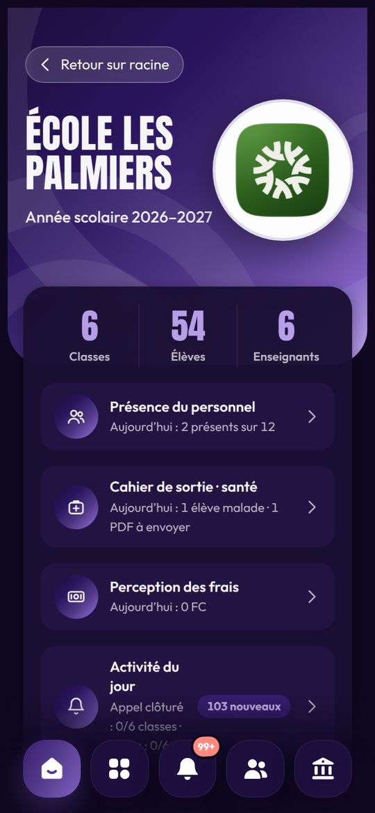
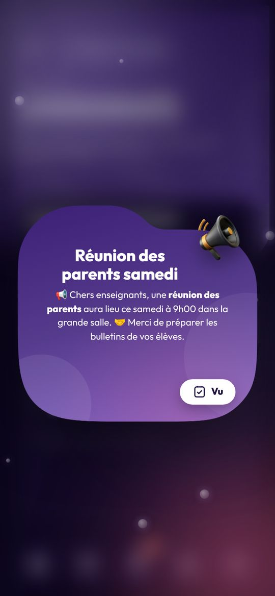
Pourquoi racines.ia
Dans beaucoup d’écoles, la direction passe ses journées à recompter, recopier et chercher. racines.ia remplace les registres et les calculs à la main par une seule application, partagée par toute l’équipe.
Pour qui
Chaque personne voit ce dont elle a besoin, et seulement cela.
Fonctions
Des outils pensés pour le calendrier, les branches et les bulletins des écoles congolaises, au primaire comme au secondaire.
Fiche complète de chaque élève : identité, numéro permanent, famille, photo, santé. Recherche instantanée, carte d’élève et rapport en PDF.
Présents, absents, malades en un geste. Statistiques et archives par période.
Interrogations, devoirs, examens par branche et sous-branche, avec les pondérations officielles.
Calculés automatiquement, prêts à imprimer en PDF, par période, trimestre ou année.
Classement, réussites et échecs par classe, et situation des palmarès de toute l’école.
Frais fixés par classe et par tranche, paiements avec reçu, élèves en retard, paiements du jour, caisse et rapport journalier. En francs congolais ou en dollars.
Arrivées signées sur le téléphone, archives et registre du jour.
Cahier journal, cahier de préparation détaillé, cahier de devoirs, cahier d’exercices et cahier de résumés : remplis sur une vraie feuille A4 à l’écran, signés, puis visés par la direction.
Pour chaque enseignant, chaque jour : quels cahiers sont remplis, et son taux du mois.
Devoirs hebdomadaires, interrogations et examens, mis en page en A4 pour l’impression.
Une note de service qui s’affiche en grand chez chaque enseignant, avec « Vu par ».
Paiements, documents à signer, corrections, messages : le téléphone sonne, même application fermée.
Élèves malades, sorties et suivi, avec PDF à envoyer.
Demandes d’explication, blâmes et remarques, avec la réponse de l’enseignant.
Programmes nationaux, livres et fiches en PDF, lus dans l’application.
Cotes et bulletins
L’enseignant saisit ses cotes dans le cahier de cotes de sa classe. racines.ia calcule les totaux, pourcentages, places et appréciations, puis prépare le bulletin officiel et le palmarès.
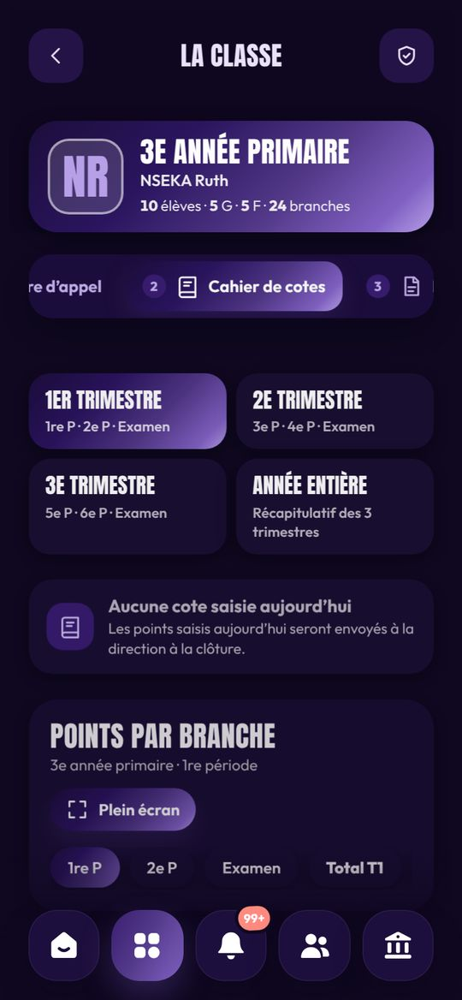
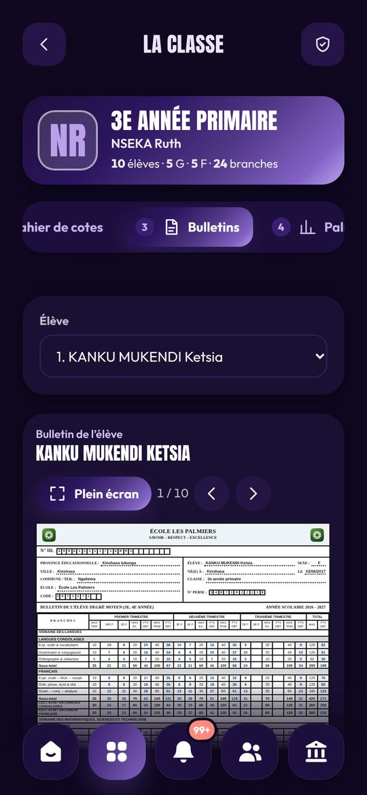
Frais scolaires
La direction fixe les frais par classe et par tranche. Chaque paiement donne un reçu et met à jour la situation de l’élève. La direction reçoit une notification à chaque paiement.
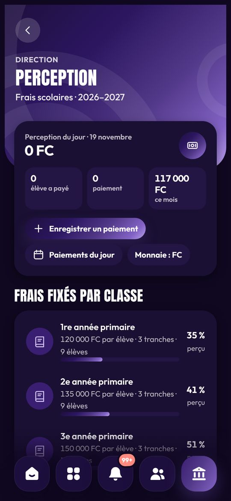
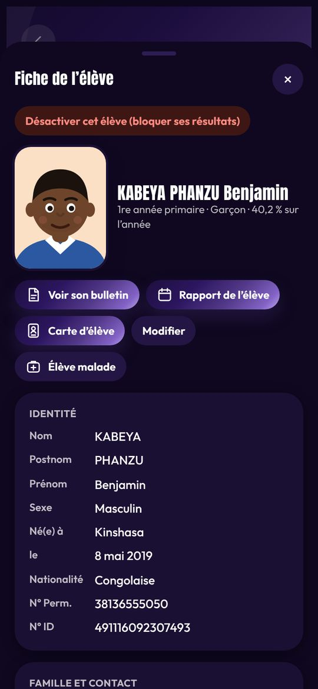
Cahiers des enseignants
Chaque enseignant remplit ses cahiers du jour avant 08h00, directement sur la feuille. Il signe, la direction lit, donne son avis et appose son visa. Un cahier rempli après 08h00 compte pour le jour suivant.
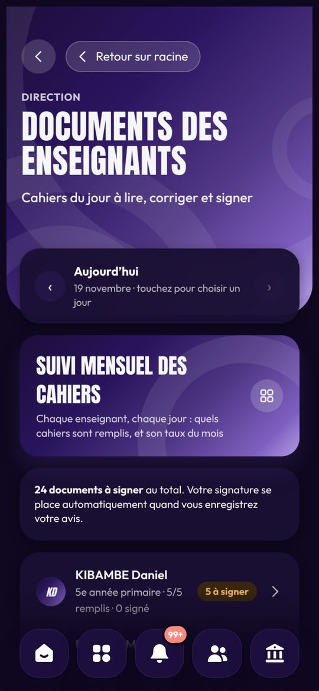
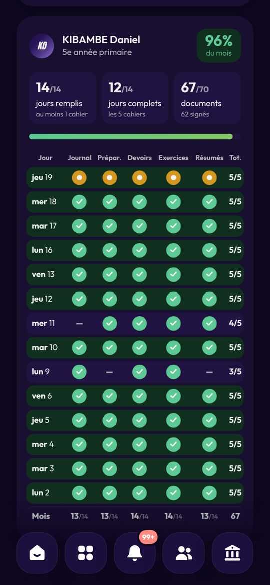
Intelligence artificielle
Quand la direction ouvre un cahier, l’IA le lit en entier. Elle relève chaque faute d’orthographe ou de frappe, repère les défauts pédagogiques, et propose une solution concrète pour chacun. La direction renvoie le document à l’enseignant, qui sait exactement quoi corriger.
La direction garde toujours le dernier mot
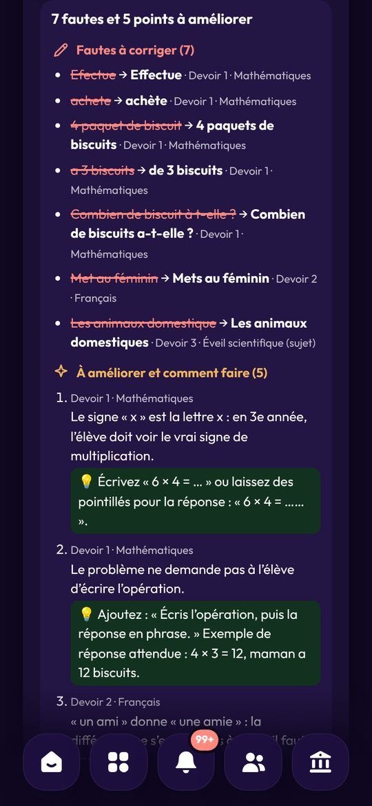
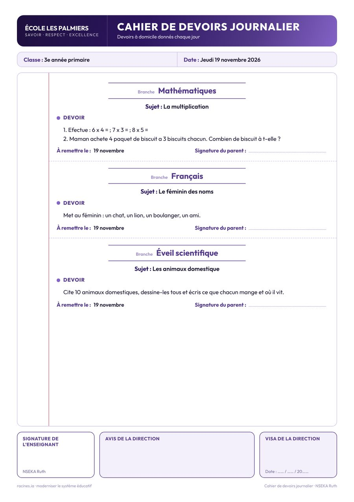
Le document
Chaque cahier garde la forme du cahier papier : en-tête de l’école, rubriques officielles, signature de l’enseignant, avis et visa de la direction. Il s’imprime ou s’envoie en PDF en un geste.
En images
Captures réalisées avec une école de démonstration : les noms et les chiffres sont fictifs.
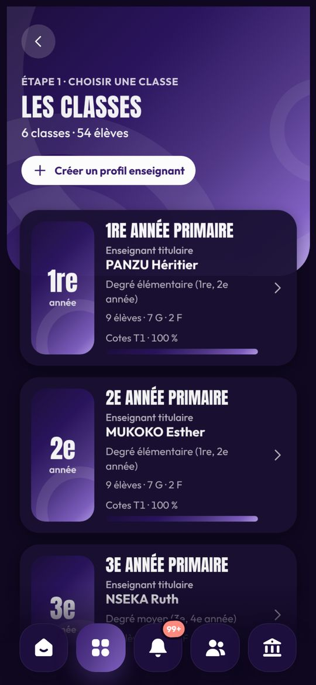
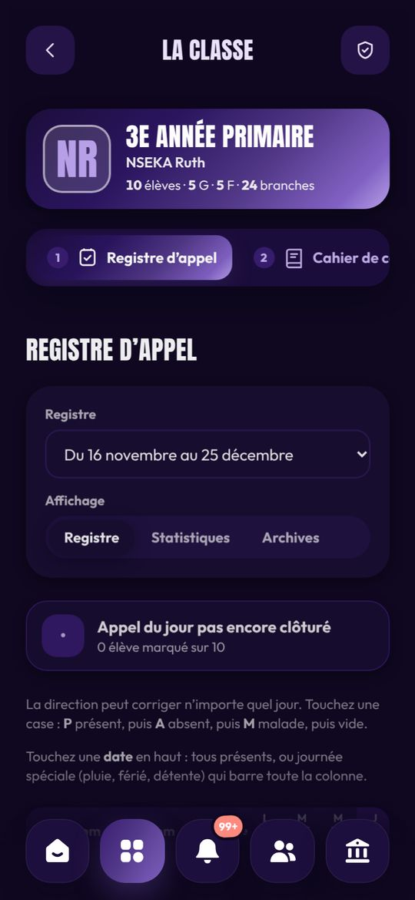
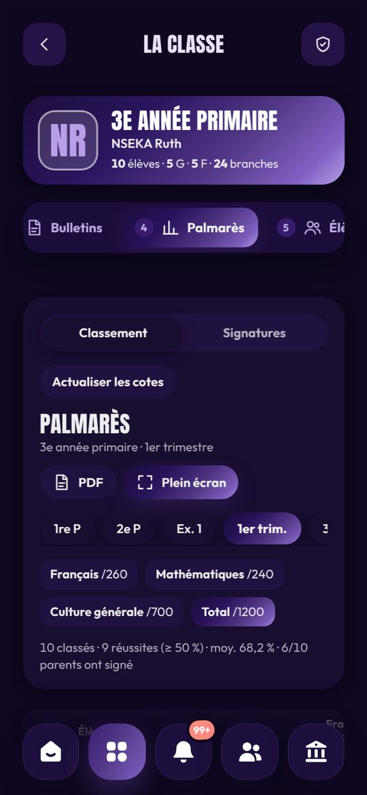
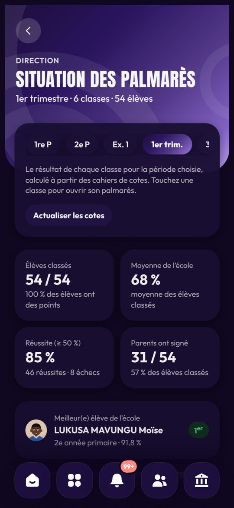
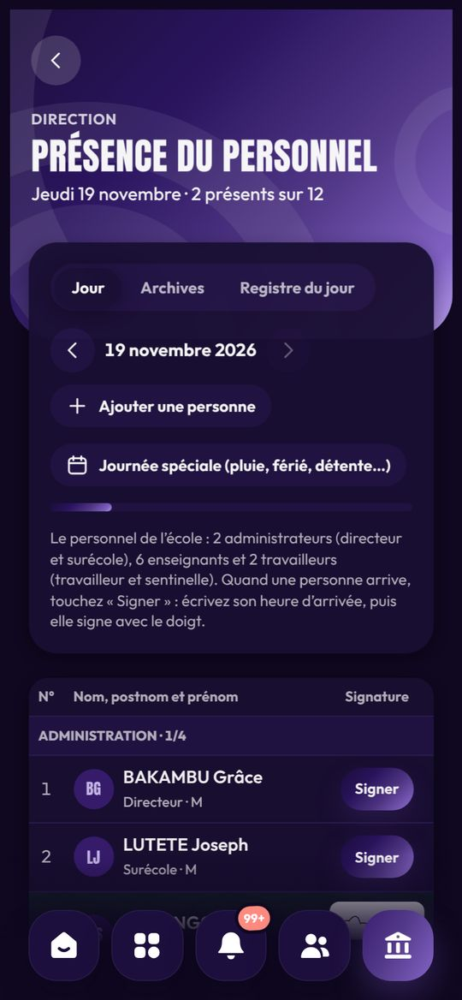
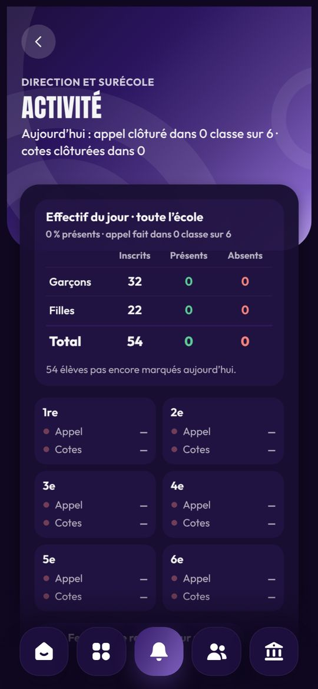
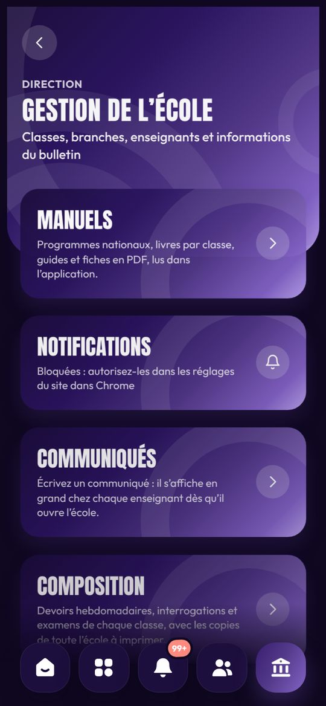
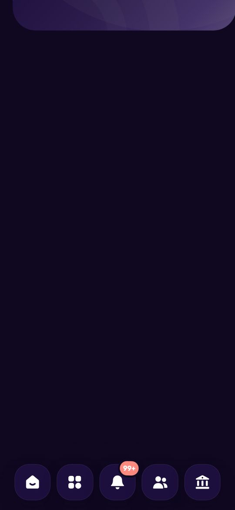
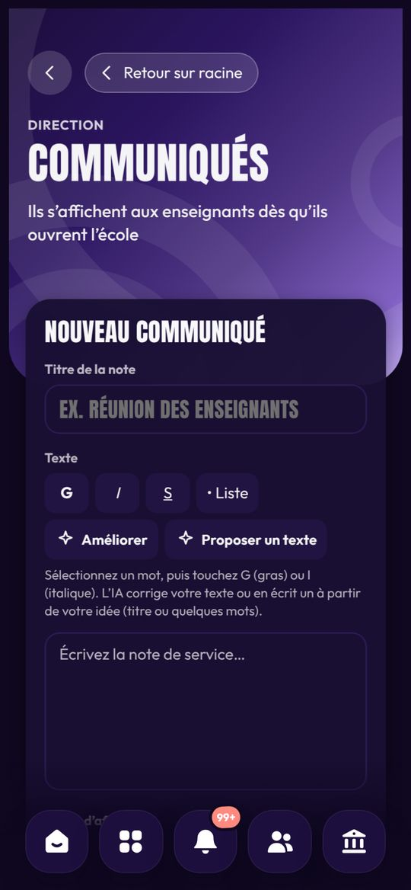
Comment ça marche
racines.ia crée l’espace de l’école, avec son nom, son logo, sa devise et un code d’accès pour la direction.
Classes, branches, frais, enseignants : tout se règle depuis le téléphone.
Chacun installe l’application et reçoit sa classe. Il ne voit que ses élèves et ses documents.
Chaque saisie arrive aussitôt chez la direction, avec une notification quand c’est utile.
Données et sécurité
Les informations sont enregistrées sur des serveurs sécurisés et ne sont jamais vendues ni partagées.
Un enseignant voit seulement sa classe et ses documents. Seule la direction voit les frais.
Les données d’une école ne sont jamais visibles depuis une autre école.
Un élève ou un document supprimé par erreur peut être restauré par la direction.
Un document signé par la direction ne peut plus être modifié par l’enseignant.
Le téléphone garde les données et ne télécharge que ce qui a changé.
Les notifications ne contiennent ni nom d’élève ni montant.
Les écoles
Chaque école garde son identité : son nom, son logo, sa couleur et sa devise apparaissent partout, sur l’application, les bulletins et les documents.
Kinshasa · Primaire
Discipline · Unité · Travail. Première école sur racines.ia.
Votre école
Primaire ou secondaire, petite ou grande : rejoignez le mouvement.
Installer
L’application se met à jour toute seule. Quand une nouvelle version Android sort, elle propose elle-même de l’installer.
Questions
Non. Tout se fait sur le téléphone : la direction, la surécole et les enseignants utilisent la même application. Les bulletins et documents s’impriment en PDF depuis le téléphone.
Oui. Le téléphone garde les données de l’école et ne télécharge que ce qui a changé. Une petite connexion suffit pour envoyer les cotes ou les cahiers.
Oui. racines.ia gère le primaire et le secondaire, avec des espaces adaptés : promoteur, préfet, directeur des études, discipline, secrétariat.
Non. Un enseignant voit seulement sa classe, ses élèves et ses propres documents. Les finances sont réservées à la direction.
Non. L’IA propose : elle relève les fautes et suggère des solutions. C’est toujours la direction qui choisit son avis, signe et décide de renvoyer un document.
Écrivez-nous : nous créons l’espace de votre école, avec votre logo et votre devise, et nous vous accompagnons pour la mise en route.
racines.ia
Inscrivez votre école, posez vos questions ou demandez une démonstration. Nous répondons rapidement.
 racines.ia
racines.ia